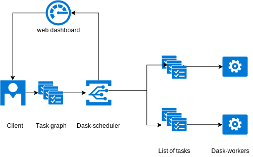
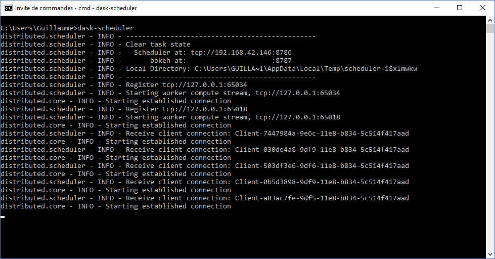
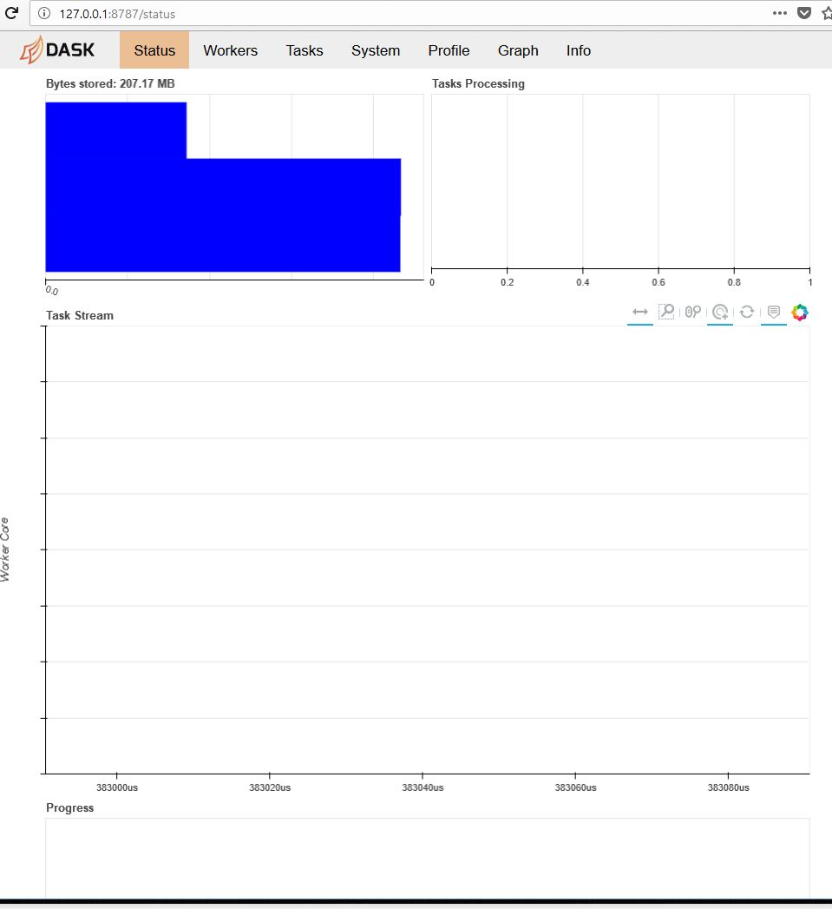
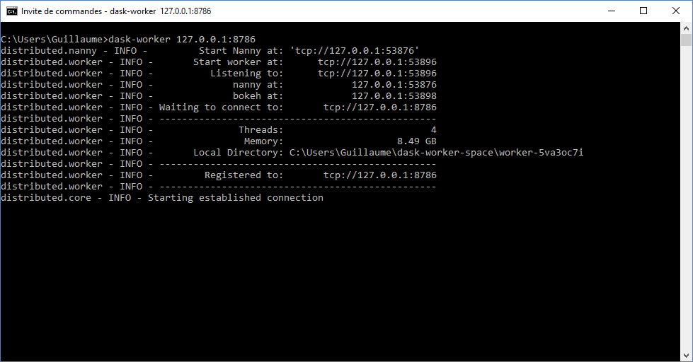
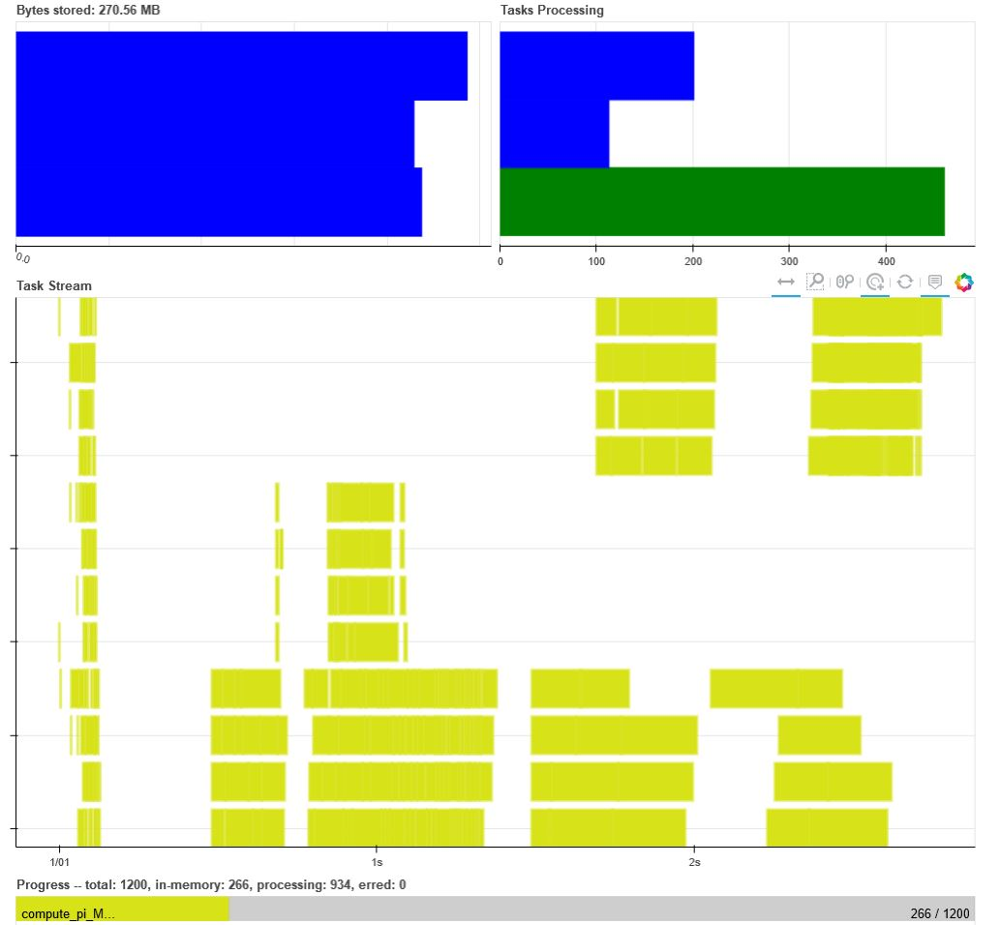
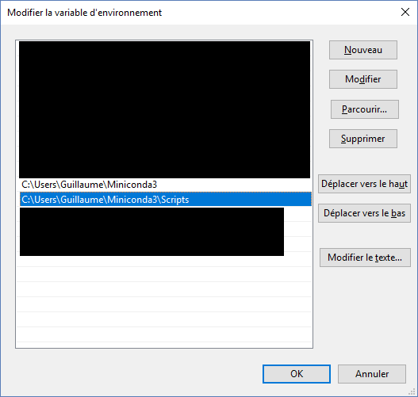

Running multiple calls to a function in parallel with Dask
Dask.distributed is a lightweight library for distributed computing in Python. It allows to create a compute graph. Dask distributed is architectured around 3 parts :
- the dask-scheduler
- the dask-worker(s)
- the dask client
Dask architecture
The Dask scheduler is a centrally managed, distributed, dynamic task scheduler. It recieves tasks from a/multiple client(s) and spread them across one or multiple dask-worker(s).
Dask-scheduler is an event based asynchronous dynamic scheduler, meaning that mutliple clients can submit a list of task to be executed on multiple workers. Internally, the task are represented as a directed acyclic graph. Both new clients and new workers can be connected or disconnected during the execution of the task graph.
Tasks can be submited with the function
client.submit(function, *args, **kwargs)
or by using objects from the dask library such as dask.dataframe, dask.bag or dask.array
Setup
In this example, we will use a distributed scheduler on a single machine with multiple workers and a single client. 
We will use the client to submit some tasks to the scheduler. The scheduler will then dispatch those tasks to the workers. The process can be monitored in real time through a web application. For this example, all the computations will be run on a local computer. However dask can scale to a large HPC cluster.
First we have to launch the dask-scheduler; from the command line, input
dask-scheduler

Next, you can load the web dashboard. In order to do so, the scheduler returns the number of the port you have to connect to in the line starting with "bokeh at :". The default port is 8787. Since we are running all the programs on the same computer, we just have to login to
http://127.0.0.1:8787/status

Finally, we have to launch the dask-worker(s). If you want to run the worker(s) on the same computer as the scheduler the type :
dask-worker 127.0.0.1:8786

otherwise, make sure you are inputing the ip address of the computer hosting the dask-scheduler.
You can launch as many workers as you want. In this example, we will run 3 workers on the local machine.
Use the dask workers within your python code
We will now see how to submit multiple calls to a fucntion in parallel on the dask-workers. Import the required libraries and define the function to be executed.
import numpy as np
import pandas as pd
from distributed import Client
#function used to do parallel computing on
def compute_pi_MonteCarlo(Nb_Data):
"""
computes the value of pi using the monte carlo method
"""
Radius = 1
Nb_Data = int(round(Nb_Data))
x = np.random.uniform(-Radius, Radius, Nb_Data)
y = np.random.uniform(-Radius, Radius, Nb_Data)
pi_mc = 4*np.sum(np.power(x,2)+np.power(y,2)<Radius**2)/Nb_Data
err = 100*np.abs(pi_mc-np.pi)/np.pi
return [Nb_Data, pi_mc, err]
In order to connect to the scheduler, we create a client.
client = Client('127.0.0.1:8786')
client
Client
|
Cluster
|
We submit tasks using the submit method
data = [client.submit(compute_pi_MonteCarlo, Nb_Data)
for Nb_Data in np.logspace(3, 7, num=1200, dtype=int)]
If you look at http://127.0.0.1:8787/status
you will see the tasks beeing completed.

Once competed, gather the data:
data = client.gather(data)
df = pd.DataFrame(data)
df.columns = ["number of points for MonteCarlo", "value of pi", "error (%)"]
df.tail()
| number of points for MonteCarlo | value of pi | error (%) | |
|---|---|---|---|
| 1195 | 9697405 | 3.141296 | 0.009454 |
| 1196 | 9772184 | 3.141058 | 0.017008 |
| 1197 | 9847540 | 3.141616 | 0.000739 |
| 1198 | 9923477 | 3.141009 | 0.018574 |
| 1199 | 10000000 | 3.141032 | 0.017833 |
There, we have completed a simple example on how to use dask to run multiple functions in parallel.
Full source code:
import numpy as np
import pandas as pd
from distributed import Client
#function used to do parallel computing on
def compute_pi_MonteCarlo(Nb_Data):
"""
computes the value of pi using the monte carlo method
"""
Radius = 1
Nb_Data = int(round(Nb_Data))
x = np.random.uniform(-Radius, Radius, Nb_Data)
y = np.random.uniform(-Radius, Radius, Nb_Data)
pi_mc = 4*np.sum(np.power(x,2)+np.power(y,2)<Radius**2)/Nb_Data
err = 100*np.abs(pi_mc-np.pi)/np.pi
return [Nb_Data, pi_mc, err]
#connect to the scheduler
client = Client('127.0.0.1:8786')
#submit tasks
data = [client.submit(compute_pi_MonteCarlo, Nb_Data)
for Nb_Data in np.logspace(3, 7, num=1200, dtype=int)]
#gather the results
data = client.gather(data)
df = pd.DataFrame(data)
df.columns = ["number of points for MonteCarlo", "value of pi", "error (%)"]
df.tail()
A word on the environement variables
On Windows, to make sure that you can run dask-scheduler and dask-worker from the command line, you have to add the location of the executable to your path.

On linux, you can append the location of the dask-worker and scheduler to the path variable with the command
export PATH=$PATH:/path/to/dask